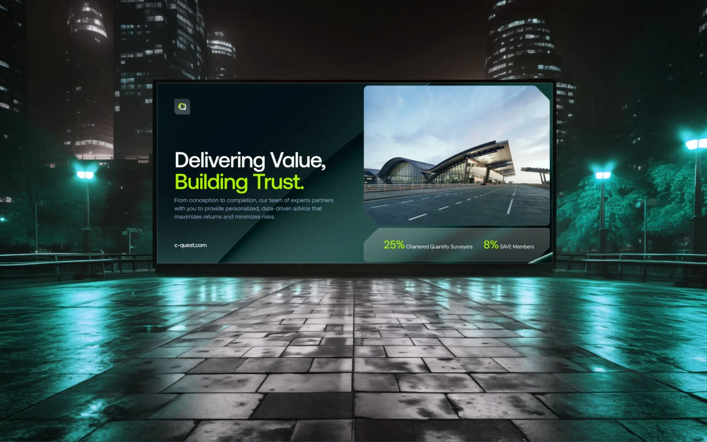

A Cost Consultant of the Year, still filed under its parent’s name, until precision became the brand.
C-Quest competes for the mega and giga projects reshaping the Gulf, where the brand is part of the bid. The firm had the track record and the 2024 Cost Consultant of the Year title, yet its identity still read as a department of the KEO Group. We gave it an independent position, an identity drawn from the surveyor’s crosshair, and a six-part system its own team runs.

Years of KEO Group expertise, now carried by an independent brand
Cost Consultant of the Year, a standing the brand had to match
Brand categories built into one system the team runs itself
A capable firm, undersold at every touchpoint.
Established in 2015 on more than 60 years of KEO Group expertise, C-Quest had grown into one of the most respected cost consultancies in the region. None of that showed up in the brand. The identity was fragmented, the online presence was thin, and everything still read as a department of the parent. C-Quest had become an independent firm, and nothing it put in front of a client said so.
On work at this scale a weak brand carries a real cost. A serious firm that introduces itself with thin materials looks junior in rooms where it is anything but. It loses pricing power, because nothing on show justifies the premium. And it slows its own move to independence, because the market keeps filing it under someone else’s name. The work was ready to stand alone, and the brand had to catch up with it.
An independent position, and a system the team could run.
Three outcomes had to be true. A clear, independent position within the KEO Group. A modern visual and verbal identity that honoured the legacy without hiding behind it. And a complete system the internal team could operate with confidence long after we left.
The strategy came from what C-Quest actually sells: financial certainty on projects where a rounding error runs to millions. The whole firm turns on accuracy, so we built the brand on accuracy itself. We passed over the usual language of trust and took the instrument that defines the work, the surveyor’s crosshair, as the centre of the identity. Position, voice and visual system all resolve to one idea the firm can stand behind in any room, expressed in three words: Strategic Cost Solutions.
One mark, drawn from the instrument of measured accuracy.
In surveying, construction and cost consultancy the crosshair is read the same way everywhere. It means accuracy, balance and technical control, the act of taking a precise reading before anything is committed. We took the reticle at the centre of every measuring instrument and built the C-Quest identity from it. Repeated across a measured grid, one symbol becomes a whole brand pattern.
A symbol only works when everyone reads it the same way, and this one holds four readings at once. Precision and measurement, the starting point of cost certainty. Focus and orientation, a fixed point inside complex projects. Balance and structure, the discipline that keeps a budget intact under pressure. Connection and mapping, the relationships across a project from first estimate to final account. Those four became the foundation for everything else in the system.
A pattern this strong can take over a page. One rule keeps it in its place: the crosshair belongs at the edges, guiding the eye inward and holding a calm, clear space for the content, with a shallow gradient softening it where it meets the message. On the live platform the pattern frames the headline and the project imagery, then steps back and lets the message carry.
Three routes, taken far enough to judge.
We built three complete routes from the same strategy and took each far enough to live: type, colour logic, graphic system and real application. Route one paired orange and black in Aeonik for energy and precision. Route two set vibrant purple and black in Archivo for bold authority. Route three used dark green and lime in DM Sans for growth and trust. Each was then read against the position, the market and everyday use.
Each route held up on its own. Read side by side, one thing kept surfacing: precision was what C-Quest actually sold, and the brand was strongest when it said so plainly. That idea went into the final system, a single red identity built on the reticle. Across three concept rounds, the chosen direction and the rollout, the work ran to 97 pieces.
The framing rule was measured before it shipped.
A brand built on precision could not ship its central rule on opinion. We tested the design with an attention heatmap and a contrast grid at two pattern strengths. The heatmap shows where the eye actually goes. The grid scores every cell for how hard it competes for attention.
At full strength the pattern pulled focus off the message, with attention scattering onto the frame. Pulled back to a quarter, the hierarchy held and the eye stayed on the message. The quarter-strength version is the one that shipped.
From a business card to a building, one system.
A brand earns its keep the moment it leaves the screen. On the business cards the pattern is debossed, quiet and precise, so the firm reads as serious before a word is spoken. Online, the new website turns the system into a clean, modular platform that states the position plainly, then scales into project and sector pages as the portfolio grows.
C-Quest works on developments you can see from space, and the brand had to read at that size, out of home and across the cities it works in, without losing its precision. An editable social and activation kit lets the marketing team run the brand day to day and hold the standard at the smallest size it will ever appear. Two image rules carry it: projects are framed for form, geometry and light, and people are shot natural and unposed, the human side of a precise business.
The finished brand is six connected categories: core identity, stationery, presentation and business tools, the digital platform, the imagery system, and the social and activation kit. Each is built so the team runs it without us.
“It is a million times better than our current website.”
What changed.
C-Quest now presents as an independent firm within the KEO Group, with a six-part brand system its own team runs. The brand is consistent across every channel and reads as serious where it used to read as junior, giving a firm with sixty years of group expertise behind it a story that matches its standing.
Read it on pivitt.co.uk